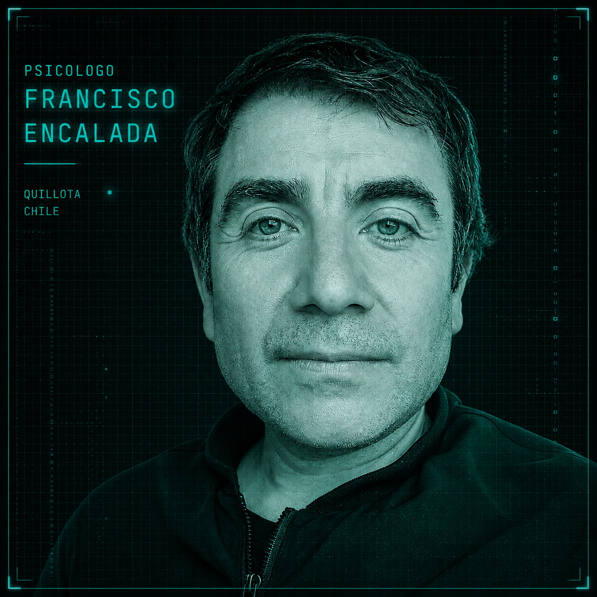

M0DUL0_01
ADOLESCENTES
Una escucha integral para comprender ideas, emociones, relaciones, conflictos y situaciones que se viven en el inicio de la adolescencia desde un mundo hiperconectado.
Una psicología centrada en escuchar tu historia de vida, usando ejemplos sencillos que te ayuden a entender lo que sientes, piensas y vives.

Psicólogo Magíster en Clínica. Reg. 11836. Magíster en Gestión de Organizaciones Escolares.
Dos décadas de trayectoria como psicólogo me han enseñado que la mejor herramienta es entregar apoyo y guía desde ejemplos simples, que ayudan a comprender las dificultades de tu vida.
Ubicación local: [ Quillota ]
Una escucha integral para comprender ideas, emociones, relaciones, conflictos y situaciones que se viven en el inicio de la adolescencia desde un mundo hiperconectado.
Una terapia orientada a comprender las dificultades emocionales, donde nuestra única e irrepetible historia de vida es nuestra ruta de trabajo.
Un espacio para guiar y acompañar a las parejas cuando sienten que “el amor ya no basta”, desde una mirada respetuosa y colaborativa que permita comprender sus dificultades, descubriendo nuevas formas de relacionarse y recuperar el bienestar de la pareja y de las personas que la integran.
La psicoterapia no tiene que convertirse en una "tarea difícil" llena de conceptos o de explicaciones confusas.
Mi trabajo consiste en escucharte activamente y ayudarte a comprender lo que te ocurre, buscando explicaciones, dando ejemplos y entregando herramientas que conecten con tu experiencia y tengan sentido para tu vida.
Así, podremos comprender cómo nuestras sensaciones, emociones y pensamientos pueden ayudarnos a reencontrar nuestro bienestar
Si estás buscando iniciar un proceso de psicoterapia, puedes escribirme y me cuentas sobre tu situación :)